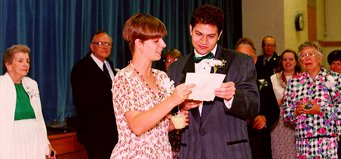
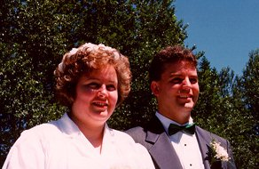

I think this needs a little explanation before you jump right in...
Eric Paul Gjovaag and Laura Jean Dunham were married July 16th, 1994 in the Cultural Hall (Gym) of Laura's local church.
The Maid of Honor was a gentleman by the name of Dan Philips, Laura's best friend after her soon-to-be-husband.
The Best Man was Eric's sister, Inger Gjovaag, Eric's best friend after his bride-to-be.
The two of them conspired to do the traditional toast together rather than giving the job to one of them alone. Between the two, they came up with something that has nearly become legend in our families, especially the line about the Gjovaag family.
The Wedding Toast

Inger and Dan, reading the toast.
We're pleased to be with you for this happy meeting.
In this cultural hall, all covered with sheeting.
We know that this fact will throw you for a loop
But under those drapes is a basketball hoop!
The bride is well known for her ticklish Aura,
We're so happy for her, this woman named Laura.
The Groom will be taking the woman he's fond a'
Off through the sunset in his car named Wanda.
They look forward to telling their eventual progeny
They met not on a date, but by talking on Prodigy!
As they nestle into their place in Seattle,
There's so much to do that their brains are an addle.
With all these fine people this part's the best,
So, let's take a moment for all our fine guests.
The Dunham Clan is as large as a legion.
The Gjovaags are few, but THEY are Norwegian!
And so many friends that they knew, but not met,
Because they had found them on the Cybernet.
Their Dr. Who meetings are just so much fun,
It's so fine to dine with all the Androgums.
And from Bellingham, with it's rain and it's blizzards,
It's always a party with Western's Lounge Lizards!
The Oogaboos are proud to see wed their young Wiz,
They still want to know how he wins every quiz.
Raise your glass in a toast to this Girl and Boy,
We wish them a life filled with resounding joy!

The Happy Couple, still in shock.